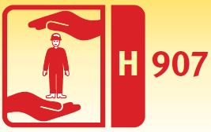
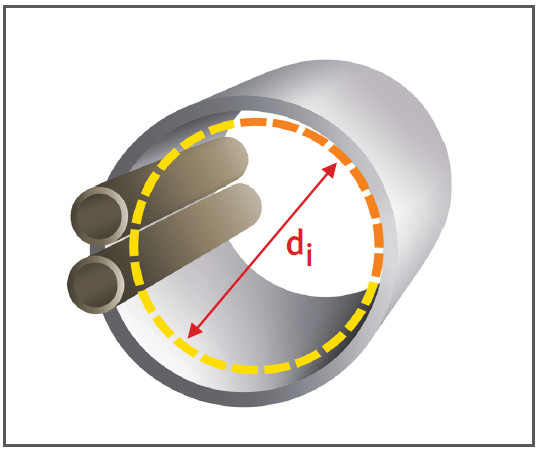

Mindestlichtmaße für Arbeiten in
Ver- und Entsorgungsleitungen
|

|

- Beschäftigte dürfen in Versorgungsleitungen z. B. Wasserleitungen mit einem Kreisquerschnitt
ab 600 mm tätig werden,
wenn keine weiteren Gefährdungen, z. B. durch Abwasser,
vorhanden sind.
- Rohrleitungen von abwassertechnischen Anlagen nur begehen wenn
- deren lichte Höhe ≥ 1000 mm oder
- deren lichte Höhe ≥ 800 mm
und ein Begehen aus betriebstechnischen Gründen notwendig ist sowie besondere Sicherheitsmaßnahmen, z. B. Rückhaltung des Abwassers, technische Lüftungsmaßnahmen, getroffen werden.
- Für Arbeiten in Versorgungsleitungen
mit einem Lichtmaß von
600 mm bis 800 mm gelten
für die Beschäftigten folgende
Einschränkungen:
- mindestens 18 Jahre alt,
- körperlich geeignet und unterwiesen,
- ständig anwesender Aufsichtführender,
- bei Einfahrstrecken > 20 m seilgeführte Rollenwagen benutzen,
- wenn möglich Robotertechnik verwenden.
- Bei der Bestimmung des lichten
Durchmessers di (Lichtmaß)
sind im Rohr befindliche Einbauteile,
z. B. Luftleitungen oder
Ähnliches zu berücksichtigen.
- Für Profile, die vom Kreisquerschnitt
abweichen, sind für
Arbeiten in Rohrleitungen die
Abmessungen gemäß der
Tabelle einzuhalten:
| Die Lichtmaße von 600 mm, bzw. 800 mm werden bei folgenden
Profilabmessungen erreicht: |
| Lichtmaß |
600 mm |
800 mm |
| Kreisprofil |
Durchmesser = 600 mm |
800 mm |
| Maulprofil |
Höhe = 600 mm |
800 mm |
| Eiprofil |
Breite/Höhe = 600/900 mm |
800/1200 mm |
| Rechteckprofil |
Breite/Höhe = 600/600 mm |
600/800 mm |
Lichtmaße, die angegebenen Profilmaße sind Innenmaße
Häufig vorkommende Profile

07/2021